A branch of artificial intelligence that concerns the realization of strategies or action sequences, typically for execution by intelligent agents, autonomous robots and unmanned vehicles (via Wikipedia)
Find the steps AND schedule
Possible states i.e Dressed, Caffeinated
class BaseProposition(object): __cache__ = {} __negation_of__ = None score = 0 def __repr__(self): return self.__class__.__name__ def __hash__(self): return hash(self.__class__.__name__) def __eq__(self, other): return self.__hash__() == other.__hash__() def __ne__(self, other): return (not self.__eq__(other)) @classmethod def negate(cls): ''' Return a new class that represents the negation of the class such that MyProposition.negate() == MyProposition.negate() ''' # If the class is already a negation of another class, return # the negated class if cls.__negation_of__: return cls.__negation_of__ name = 'Not' + cls.__name__ # Early return if we have cached this negation class before if cls.__cache__.get(name): return cls.__cache__[name] # Create a new class from the old class that is the inverse of # the class klass = type(name, (cls,), {}) klass.__negation_of__ = cls # Add it to the class cache for next time cls.__cache__[name] = klass return klass @classmethod def is_negation(cls, proposition): '''Return True if proposition is a negation of self''' ... @classmethod def is_inconsistent_support(cls, action_layer, action_mutexes, proposition): ''' Returns True if all actions to achieve the propositions at the previous level are pairwise mutexes. ''' ...
class BaseAction(object): # Describes whether or not this action does anything # (preconditions != postconditions) is_noop = False def __repr__(self): return self.__class__.__name__ def __hash__(self): return hash(self.__class__.__name__) def __eq__(self, other): return self.__hash__() == other().__hash__() def __ne__(self, other): return (not self.__eq__(other)) @classmethod def is_inconsistent(cls, action): ''' Compare self to another action to check for inconsistent mutex i.e effect of this action is a negation of the post conditions of the other action ''' ... @classmethod def is_interfering(cls, action): ''' Compare self to another action to check for interference mutex i.e one action deletes the proposition of the other ''' ... @classmethod def is_competing(cls, action): ''' Compare self to another action to check for competing needs mutex i.e the actions have propositions that are mutex with propositions from the proposition layer ''' ...
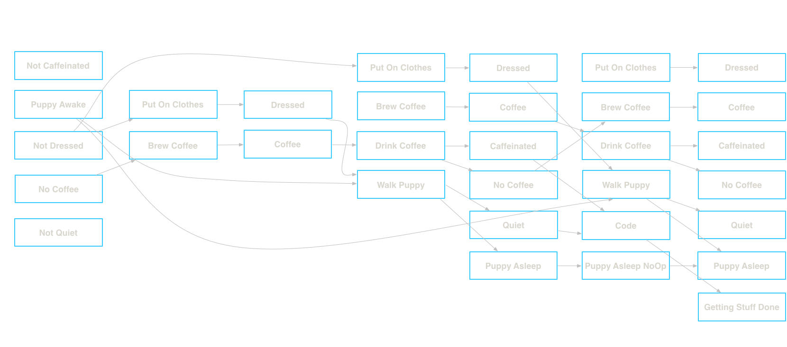
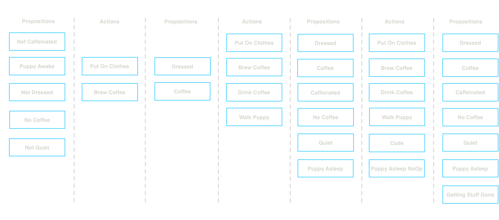
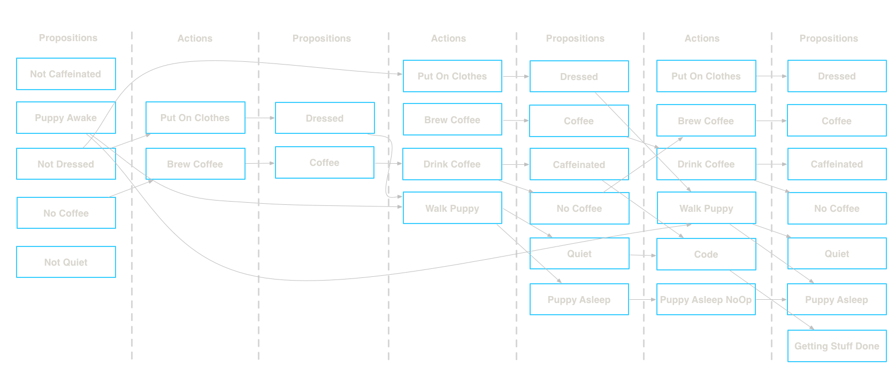
class BasePropositionLayer(object): def __repr__(self): return self.__class__.__name__ def __init__(self, propositions, action_layer=None): ''' Proposition layer can optionally be initialized with an action layer that generated it. This is needed to get the mutexes of this layer. ''' self.propositions = propositions self.action_layer = action_layer return @property def mutexes(self): ...
class BaseActionLayer(object): __cache__ = {} proposition_layer = None preconditions = None def __repr__(self): return self.__class__.__name__ def __init__(self, proposition_layer): # Reference to the previous proposition layer self.proposition_layer = proposition_layer self.preconditions = proposition_layer.propositions @classmethod def create_maintenance_action(cls, action_class, proposition): ''' Return a new action that represents a maintenance action for maintaining the proposition. ''' name = proposition.__name__ + 'NoOp' # Check if we already have this class in the cache if cls.__cache__.get(name): return cls.__cache__[name] klass = type(name, (action_class,), {'__cache__': cls.__cache__}) klass.preconditions = [proposition] klass.postconditions = [proposition] klass.is_noop = True # Store it in the class cache cls.__cache__[name] = klass return klass @property def maintenance_actions(self): '''Returns a list of maintenance action classes''' for p in self.preconditions: # HACK hardcoding the action class to use, but if the user # wants to extend the system they will want to override # which action class to use yield self.create_maintenance_action(BaseAction, p) @property def actions(self): ''' Returns a list of all the actions that can be taken based on the proposition layer propositions. ''' raise NotImplementedError('Must implement the actions method') @property def actions_and_maintenance_actions(self): ... @property def effects(self): ''' Returns a set of all postconditions for any possible action at this layer. ''' conditions = (i.postconditions for i in self.actions_and_maintenance_actions) return set(chain(*conditions)) @property def mutexes(self): ''' Return a collection of mutually exclusive action pairs. Actions are mutually exclusive if: - Inconsistent effects: effect of one action is negation of effect of another - Interference: one action deletes the propositions of the other - Competing needs: the actions have propositions that are mutex at level i-1 ''' ...
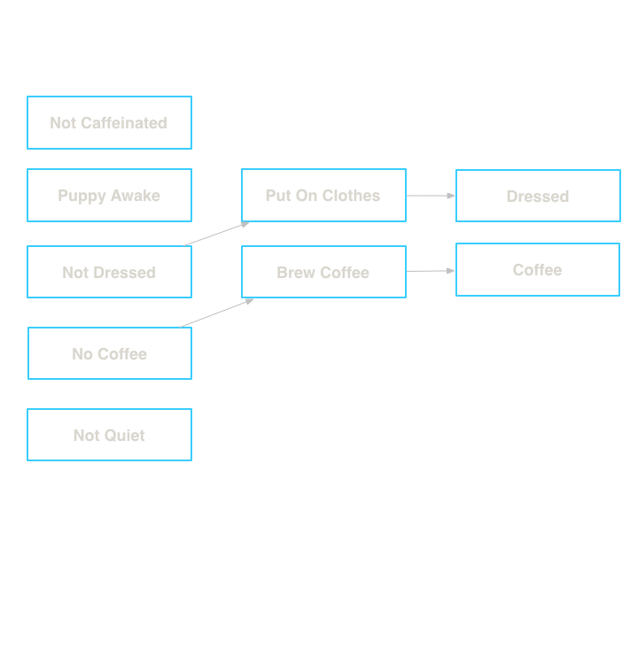
class BaseGraphPlan(object): proposition_layer_class = None action_layer_class = None def __init__(self, init_propositions, goal_propositions): # Set all the goal conditions self.goals = goal_propositions # Generate the initial proposition layer and action layer base_prop_layer = self.proposition_layer_class(init_propositions) self.last_proposition_layer = base_prop_layer base_action_layer = self.action_layer_class(base_prop_layer) self.last_action_layer = base_action_layer # Set up the graph state represented by a list of # proposition/action layer instances self.layers = [base_prop_layer, base_action_layer] # Tick to the next proposition layer so we can check for solutions self._next_proposition_layer() def _next_proposition_layer(self): ''' Create a new proposition layer instance based on the effects of the previous action layer. Updates the last_proposition_layer property and appends the new layer to layers. ''' layer = self.proposition_layer_class( self.last_action_layer.effects, action_layer=self.last_action_layer ) self.last_proposition_layer = layer self.layers.append(layer) return layer
Add another action layer and proposition layer 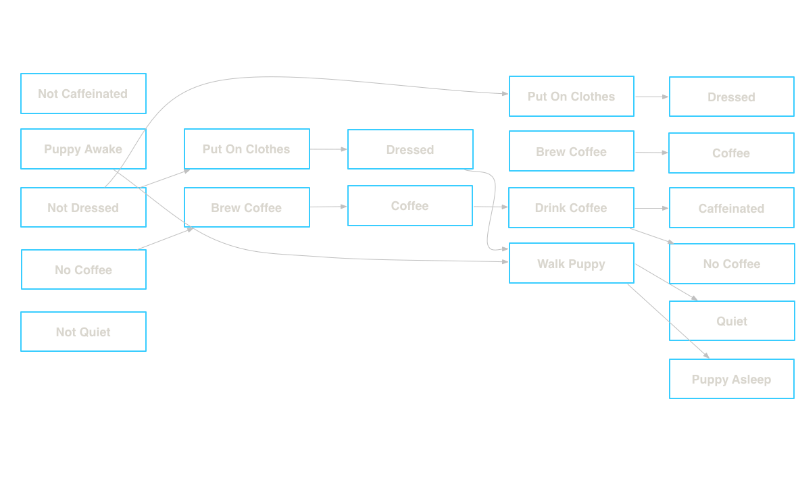
def _next_action_layer(self): ''' Create a new action layer instance based on the previous proposition layer. Updates the last_action_layer property and appends the new layer to layers. ''' layer = self.action_layer_class( self.last_proposition_layer ) self.last_action_layer = layer self.layers.append(layer) return layer def _next_proposition_layer(self): ''' Create a new proposition layer instance based on the effects of the previous action layer. Updates the last_proposition_layer property and appends the new layer to layers. ''' layer = self.proposition_layer_class( self.last_action_layer.effects, action_layer=self.last_action_layer ) self.last_proposition_layer = layer self.layers.append(layer) return layer def expand(self): ''' Expand the plan graph to another action and proposition layer. ''' LOGGER.info("Expanding planning graph") self._next_action_layer() self._next_proposition_layer()
Allows us to prune the actions that will be considered when searching for a solution
The actions have propositions that are mutex with propositions from the previous proposition layer 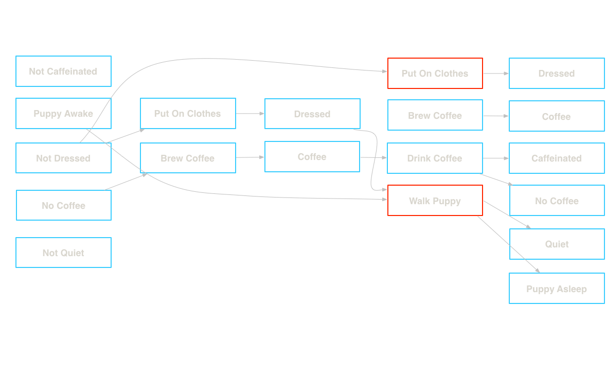
@classmethod def is_competing(cls, action): for p in cls.preconditions: if p.negate() in action.preconditions: return True return False
Effect of an action is a negation of the effects of the other action 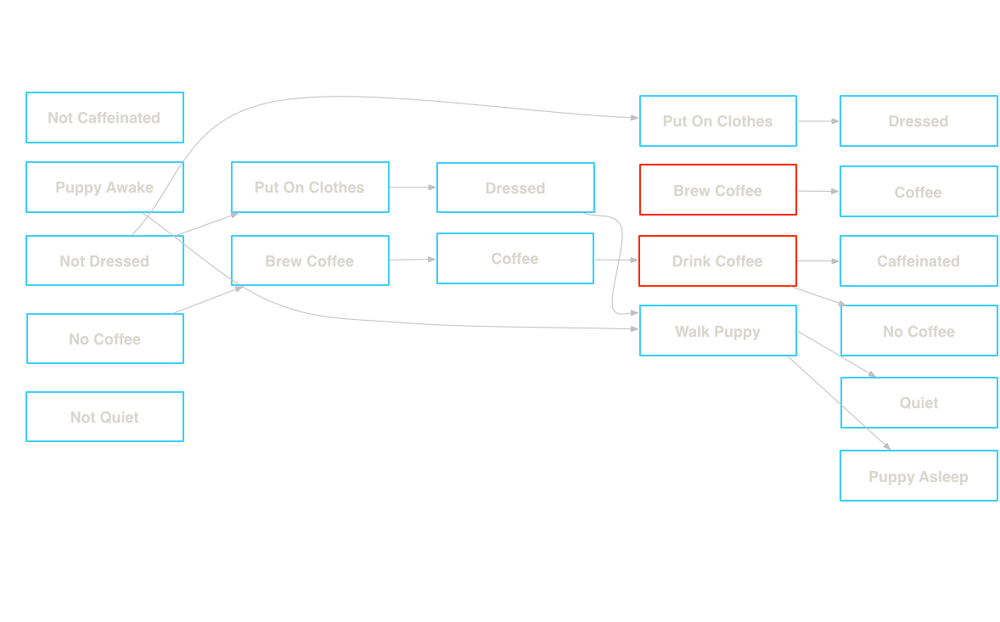
@classmethod def is_inconsistent(cls, action): for p1, p2 in product(cls.postconditions, action.postconditions): if p1.is_negation(p2): return True return False
An action deletes the precondition of the other action i.e Taking out the garbage and cooking
@classmethod def is_interfering(cls, action): for p in cls.postconditions: if p.negate() in action.preconditions: return True return False
The proposition is a negation of the other proposition. i.e Dressed, Not Dressed
@classmethod def is_negation(cls, proposition): '''Return True if proposition is a negation of self''' return cls.negate() == proposition
All actions to achieve the propositions at the previous level are pairwise mutexes
@classmethod def is_inconsistent_support(cls, action_layer, action_mutexes, proposition): p1_actions = action_layer.actions_by_postcondition(cls) p2_actions = action_layer.actions_by_postcondition(proposition) for pair in product(p1_actions, p2_actions): if frozenset(pair) not in action_mutexes: return False return True
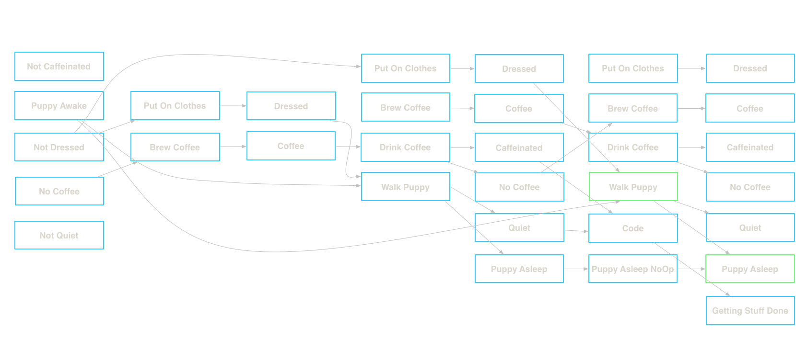
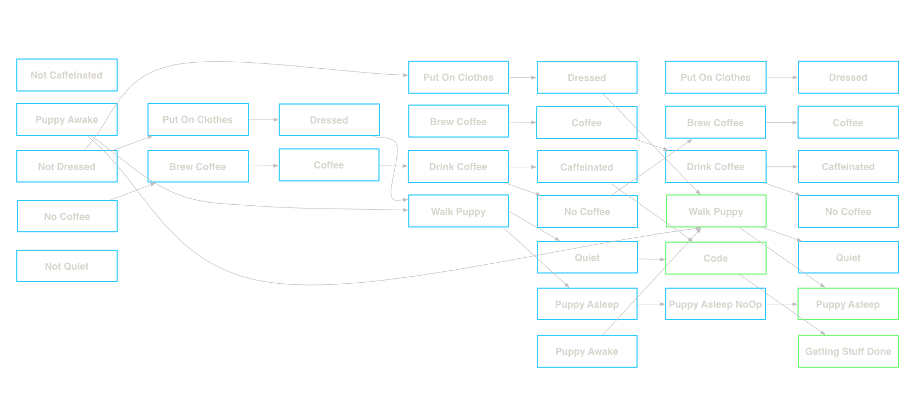
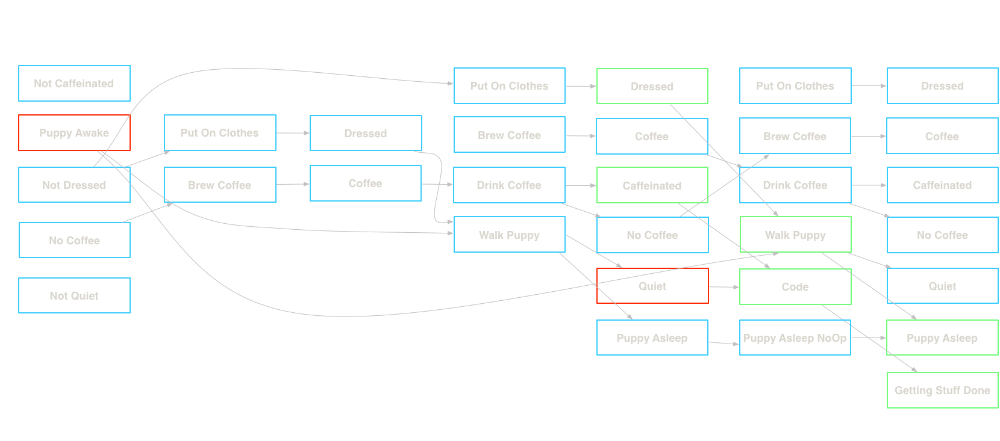
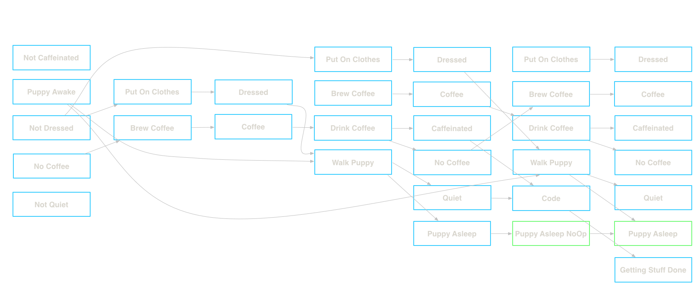
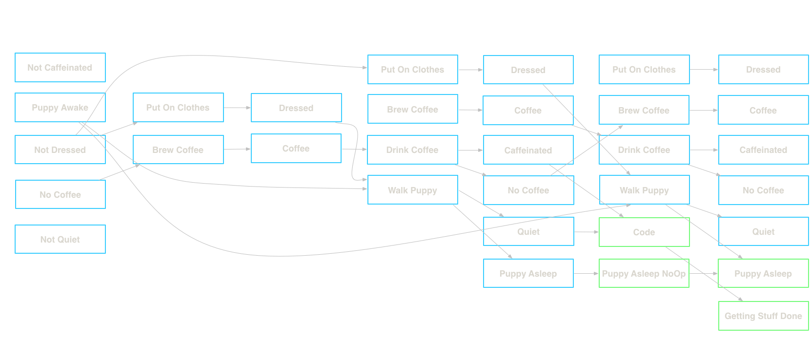
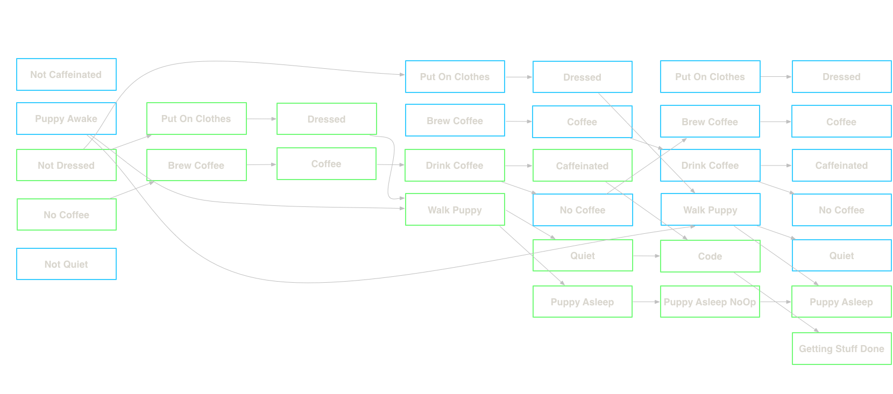
Get in touch!
Created by Alex Kehayias